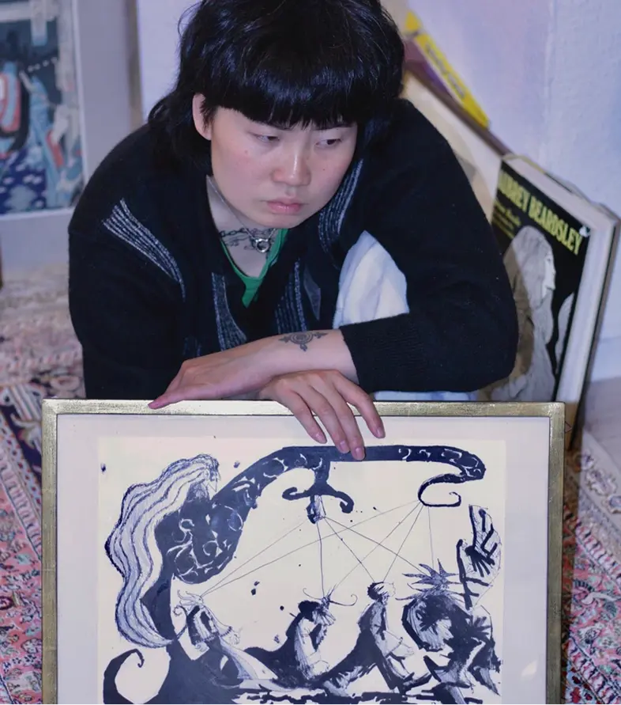
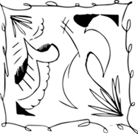
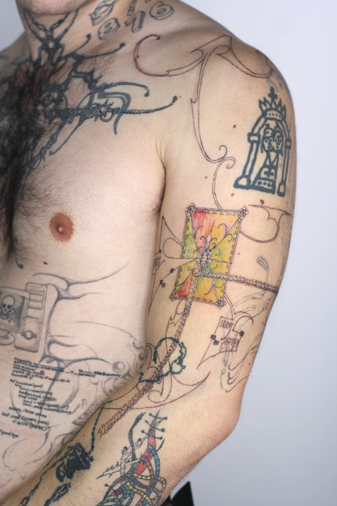

NAIA ESCRIBANO
“Me parece muy loco pensar que alguien quiera llevar mi trabajo en su cuerpo”.


Decidió dejar las ciencias naturales para vivir de la
creatividad. Criada en España, viviendo en Berlín, piden sus
tatuajes en Londres, Lisboa y París.
A veces intentamos esconder lo visible. Quizás
porque no queremos verlo o no estamos preparados para
afrontarlo. Preferimos ir por el camino seguro, no
arriesgarnos. Incluso aunque eso signifique callar nuestra
corazonada.
Los artistas parecen iniciar su proceso ignorando
lo que sienten. Pero, paradójicamente, saben muy bien que no
nacieron para una oficina, sino para algo más. Los miedos, la
incertidumbre y la validación externa son solo algunos de los
sentimientos que pueden surgir en la mente de estas personas.
Naia Escribano, de 24 años, nos acerca su
experiencia personal como tatuadora, pero principalmente, como
persona creativa.
Naia, para comenzar cuéntanos un poco sobre ti ¿cómo te describirías a vos misma?
Siempre me ha costado un poco describirme a mí misma. Bueno, a ver, sí que podría decir que soy una persona tranquila y que desde pequeña siempre me ha gustado mucho observar, casi como una cámara captando momentos o dinámicas de otras personas. Y no lo sé, siempre he tenido mucha curiosidad.
Puedo ver que eres una persona super creativa. Escribes, eres tatuadora, diseñadora gráfica e ilustradora, ¿de dónde crees que viene toda esa creatividad?
Yo diría que otra vez viene de observar y de tener mucha curiosidad. Una cosa que me encanta de cuando era pequeña y, que todavía me sigue encantando, es dormir y soñar. Pues estoy soñando y estoy volando, y de repente veo un edificio o un paisaje desde diferentes perspectivas que en la vida real es difícil imaginarlo. Entonces, me gusta recrear en mis dibujos esa parte tan mágica que tiene el sueño y, quizás de ahí, también venga un poco la creatividad.
Cuando tienes esos sueños, ¿eres de las personas que se despiertan y lo escriben en un cuaderno?
Siempre soy de escribirlo o sino, se lo digo a alguien. Lo de soñar que vuelo me pasa bastante, desde pequeña. No sé si es que me encantaría hacer eso porque luego le tengo miedo a las alturas, entonces no tiene sentido.

Tengo entendido que antes de orientarte al arte estudiaste biología, ¿puede ser?
Sí.
¿Cómo fue darse cuenta que esa carrera no era para ti y dedicar tu vida a lo creativo?
Fue un poco lento el proceso. Al principio sí que sabía que tendía hacia la rama artística, pero de pequeña me intimidaba un poco el hecho de hacer el bachillerato de artes. De hecho, antes del bachillerato me hice el test vocacional y me salía un porcentaje alto de lo de artes y yo dije: ‘No. Hago Biología y, si en algún momento me quiero pasar a artes, será mucho más fácil que hacerlo al revés’.
¿Qué era lo que te causaba tanto miedo?
Supongo que un poco lo que escuchas entre la gente, eso de: ‘Es muy difícil o ‘ cómo vas a vivir de eso’. Mis padres nunca me lo han dicho, pero alrededor mío sí que lo escuchaba. De hecho, una de mis amigas de la infancia me dijo: ‘Si eso no tiene ninguna salida, ¿cómo vas a hacer eso?’
Entonces, ¿qué fue lo que te hizo tomar la decisión de cambiarlo todo?
Yo creo que estaba cansada de estudiar cosas con las que no conectaba o que no me llenaban realmente. Me gustaba la parte de biología y de psicología en el futuro, pero odiaba Matemáticas y odiaba Física y Química. Era como un: ‘No puedo más’. Creo que lo que me cambió ahí fue elegir la optativa de dibujo artístico y me dije: ‘¿Por qué no me atrevo?’. Mis padres también me animaron mucho eso.
¿Crees que sin su apoyo no te hubieses atrevido?
Cuando estás en esa edad, de 18 años, al final sí que me importaba mucho su validación. Pero pensé que si ellos me estaban apoyando, significa que igual puedo, ¿no? Me siento una privilegiada porque mis padres sí que eran muy abiertos de mente y me apoyaron y me siguen apoyando en todo momento. Porque igual me podrían haber dicho lo típico de hacer Ingeniería.
¿Notaste algún cambio al pasarte a artes?
Sí. Por una vez no era una estudiante mediocre, sino que por primera vez los profesores me animaban. Fue como ver la luz y pensar qué fácil es todo cuando me gusta lo que estudio, que fácil es sacar buenas notas, aprender o prestar atención.
En tus dibujos y diseños veo mucha referencia medieval, ¿de dónde viene esa influencia?
Me gusta mucho ese mundo. Simbólicamente me parece muy interesante la idea del castillo, lo que fue en su momento y lo que es hoy, cómo un espacio cambia tanto con el tiempo. Claro que puedo estudiar cómo vivían en aquel momento, pero siempre me queda como una ventana de que ahí puede entrar mi imaginación y puedo pensar diferentes historias.
¿Puede ser que esta época medieval esté relacionada con parte de tu vida?
Puede ser. Creo que es porque mis padres, cuando era pequeña, tenían una autocaravana e íbamos de viaje por Francia, por España y por diferentes sitios. Muchas veces veíamos lugares con castillos y creo que en esos países hay bastantes muy bonitos. Creo que las referencias que tomo siempre son cosas que me recuerdan a mi infancia, pero también cosas que me siguen gustando y que quiero seguir reinventando.